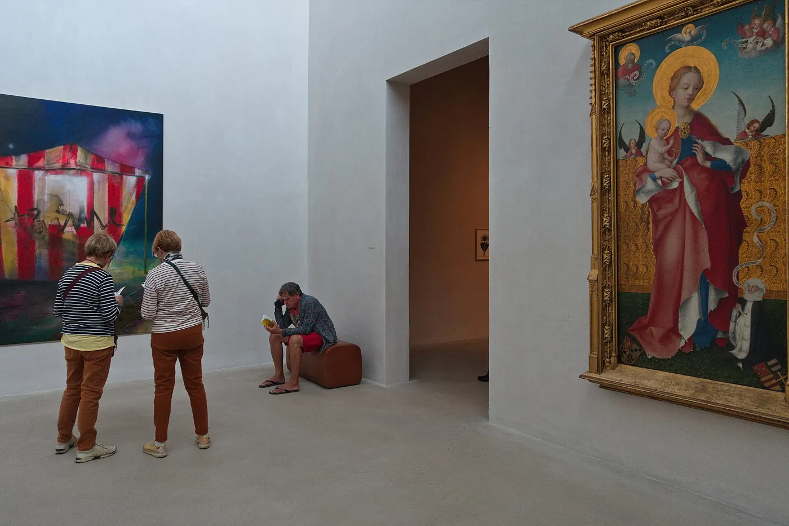
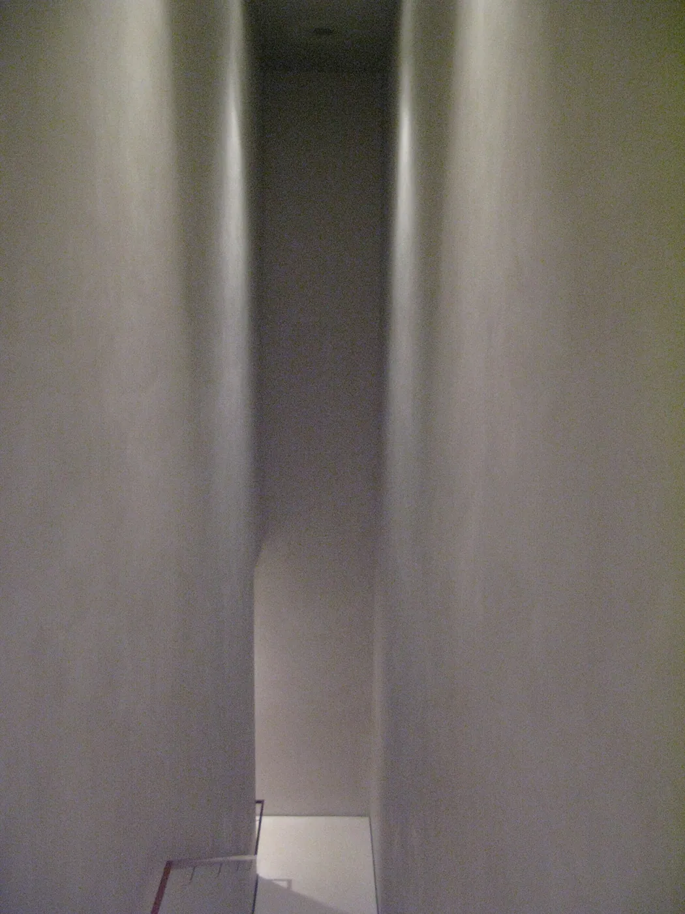
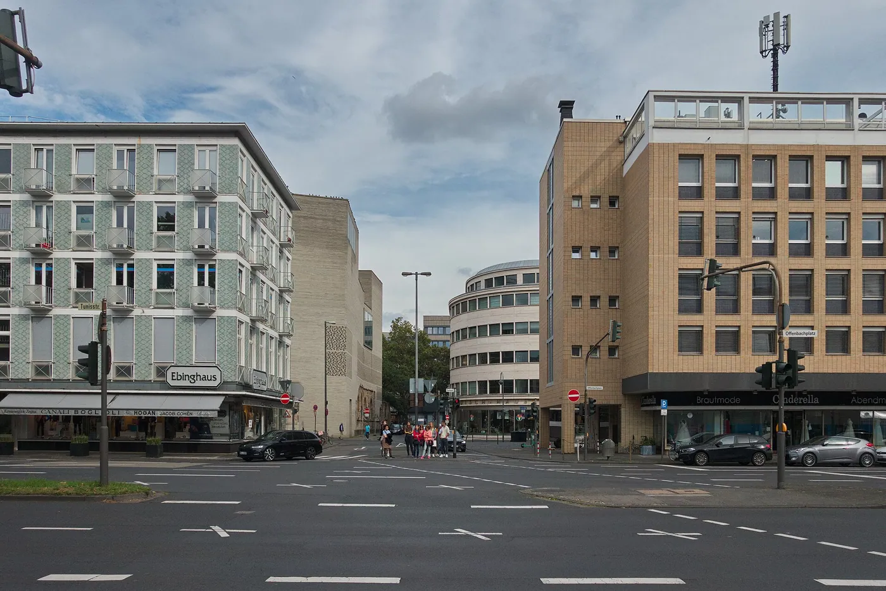
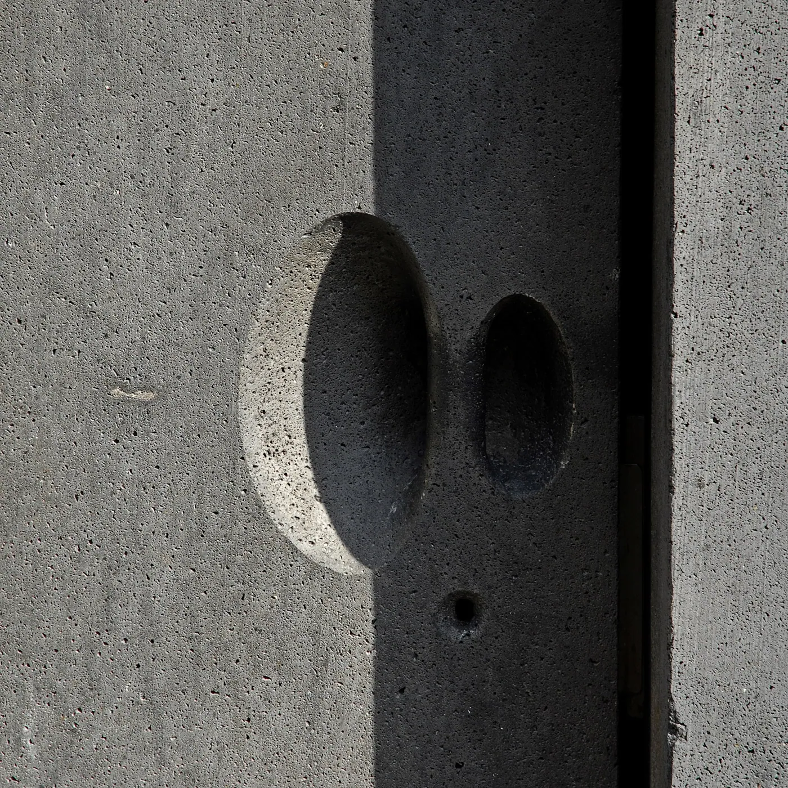

1/7 · Interior · Excavations /Foundations of StPhoto: Raimond Spekking · CC BY-SA 4.0 · source
1/7 · Interior · Excavations /Foundations of StPhoto: Raimond Spekking · CC BY-SA 4.0 · source
2/7 · Interior · StPhoto: Bengt Oberger · CC BY-SA 4.0 · source 3/7 · Interior · Kolumba (museum) TreppePhoto: Akiramifune · CC BY-SA 4.0 · source
3/7 · Interior · Kolumba (museum) TreppePhoto: Akiramifune · CC BY-SA 4.0 · source
4/7 · Interior · Treppe im Diozesanmuseum des Erzbistum Köln StPhoto: User:Denkmaldoktor · CC BY-SA 4.0 · source
5/7 · Interior · Raum 21 (Südturm) des Kolumba (Museum) , KölnPhoto: Raimond Spekking · CC BY-SA 4.0 · source
6/7 · Detail · chapel of stPhoto: seier+seier · CC BY 2.0 · source7/7 · Interior · Kolumba,KölnPhoto: MenkinAlRire · CC BY-SA 4.0 · sourceMuseum · Contemporary
Kolumba Museum
Peter Zumthor · Cologne, Germany · 2007
Key featuresA perforated brick veil built over the ruins of a Gothic church.
- Architect
- Peter Zumthor
- Place
- Cologne, Germany
- Year
- 2007
- Typology
- Museum
- Movement
- Contemporary
- Region
- Europe
See it on the wall


_Treppe.jpg){kind=link}

.jpg){kind=link}
.jpg){kind=link}